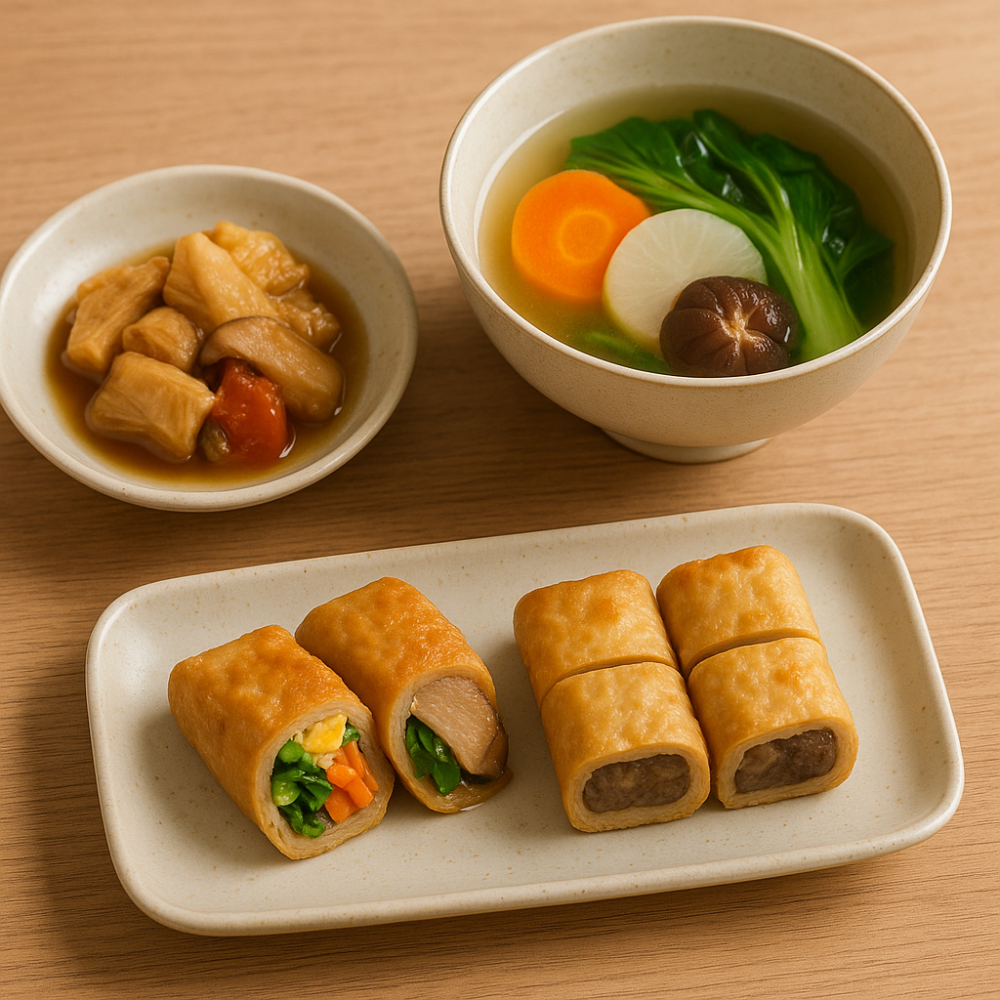

Day 1 Recipe

Credit to: ChatGPT
Description
“ This is a shōjin ryōri dish, using basic leftover ”
Sweet and light green mustard – white radish – carrot soup
Ingredients
- ½ carrot (thinly sliced or carved into flowers)
- ½ white radish (sliced or small pieces)
- ½ chayote (peeled, cut into pieces)
- 1 bunch of green mustard (cut into 5–6cm pieces)
- 1 slice of mushroom patties (thinly sliced)
Steps
- Boil water, add carrots, white radish, chayote and cook for 10 minutes.
- Season water to taste, add mushroom patties, cook for 2 minutes.
- Add green mustard last, cook until just done (2–3 minutes), avoid being too soft.
Notes
Serve hot, you can sprinkle more pepper and 1 drop of sesame oil if you want to enhance the flavor.
Home